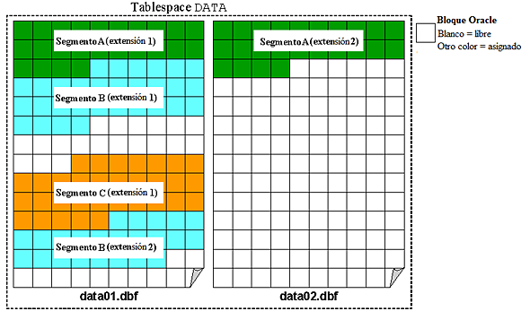

Oracle
Vamos a establecer que los objetos que se creen en el 'TS1' tengan un tamaño inicial de 200K, y que cada extensión sea del doble del tamaño que la anterior. El número máximo de extensiones será de 3.
Para ello, antes de nada, necesitaremos crear el propio tablespace. En mi caso, lo crearé con un fichero, de 2 MB, y autoextensible:
SQL> create tablespace TS1 2 datafile 'ts1.dbf' 3 size 2M 4 autoextend on; Tablespace creado.
Una vez creado, vamos a establecer dicho tablespace offline para poder operar con él:
SQL> alter tablespace TS1 offline; Tablespace modificado.
Modificamos el tablespace TS1:
SQL> ALTER TABLESPACE TS1 2 DEFAULT STORAGE ( 3 INITIAL 200K 4 NEXT 400K 5 PCTINCREASE 100 6 MINEXTENTS 1 7 MAXEXTENTS 3); ALTER TABLESPACE TS1 * ERROR en lÝnea 1: ORA-25143: la clßusula de almacenamiento por defecto no es compatible con la polÝtica de asignaci¾n
A la hora de hacer el alter table nos salta un error debido a que el tablespace está por defecto hecho en local, no por diccionario, por lo que no podemos modificar las clausulas de almacenamiento. Podemos observar que el tablespace system efectivamente está guardado en local.
SQL> SELECT tablespace_name, extent_management FROM dba_tablespaces where tablespace_name='SYSTEM'; TABLESPACE_NAME EXTENT_MAN ------------------------------ ---------- SYSTEM LOCAL
Vamos a crear dos tablas en el tablespace recién creado e insertaremos un registro en cada una de ellas. Comprobaremos el espacio libre existente en el tablespace. Borraremos una de las tablas y comprobaremos si ha aumentado el espacio disponible en el tablespace.
Primero vamos a establecer el tablespace online:
SQL> alter tablespace TS1 online; Tablespace modificado.
Antes de nada, vamos a observar el espacio libre que posee ahora mismo dicho tablespace, que actualmente se encuentra vacío:
SQL> select tablespace_name, bytes from dba_free_space where tablespace_name='TS1'; TABLESPACE_NAME BYTES ------------------------------ ---------- TS1 1048576
Bien, ahora vamos a proceder a crear las dos tablas en el tablespace TS1:
SQL> create table Tabla1 2 ( 3 Campo1 VARCHAR2(20) 4 ) 5 tablespace TS1; Tabla creada. SQL> create table Tabla2 2 ( 3 Campo2 VARCHAR2(20) 4 ) 5 tablespace TS1; Tabla creada.
Una vez que las tablas han sido creadas, vamos a insertar un registro en cada una de ellas:
SQL> insert into Tabla1 values('Registro1');
1 fila creada.
SQL> insert into Tabla2 values('Registro2');
1 fila creada.
Una vez que los registros han sido insertados, vamos a observar de nuevo el tamaño disponible del tablespace:
SQL> select tablespace_name, bytes from dba_free_space where tablespace_name='TS1'; TABLESPACE_NAME BYTES ------------------------------ ---------- TS1 917504
Podemos apreciar como lógicamente el espacio libre ha disminuido.
Por último, vamos a probar a borrar una tabla de las almacenadas en dicho tablespace y a observar si se libera espacio.
SQL> drop table Tabla2; Tabla borrada.
Ya hemos borrado una de las tablas, de forma que únicamente estaríamos almacenando en el tablespace TS1, una tabla. Vamos a repetir la consulta anterior para ver cuanto espacio disponible tenemos:
SQL> select tablespace_name, bytes from dba_free_space where tablespace_name='TS1'; TABLESPACE_NAME BYTES ------------------------------ ---------- TS1 917504 TS1 65536
Como podemos observar, nos aparece una nueva línea que indica 65536 bytes.
Esto se debe a que en Oracle, los tablespaces se dividen en segmentos, y cada segmento es un objeto del tablespace, por lo que esos bytes son los que se han liberado tras eliminar la tabla Tabla2.
Vamos a convertir 'TS1' en un tablespace de sólo lectura. Intentaremos insertar registros en la tabla existente. ¿Qué ocurre? Intentaremos borrar la tabla. ¿Qué ocurre? ¿Por qué pasa eso?
Vamos a convertir el tablespace TS1 en un tablespace de sólo lectura. Para ello ejecutamos el siguiente comando:
SQL> alter tablespace TS1 read only; Tablespace modificado.
Hecho esto, vamos a probar a insertar un registro en la Tabla1 almacenada en dicho tablespace:
SQL> insert into Tabla1 values('Registro2');
insert into Tabla1 values('Registro2')
*
ERROR en lÝnea 1:
ORA-00372: el archivo 13 no se puede modificar en este momento
ORA-01110: archivo de datos 13:
'C:\USERS\SERVIDOR\DESKTOP\WINDOWS.X64_193000_DB_HOME\DATABASE\TS1.DBF'
Obviamente, al establecer el tablespace TS1 como sólo lectura, no podemos hacer una inserción de datos en él, ya que esto supondría una escritura sobre lo que ya se encuentra almacenado en dicho tablespace.
Para seguir comprobando este razonamiento, vamos a intentar borrar la tabla que se encuentra almacenada en él:
SQL> drop table Tabla1; Tabla borrada.
¡Vaya! El razonamiento anterior parece que no es del todo cierto, pues la tabla sí ha sido borrada.
¿Pero por qué pasa esto? Bien, esto se debe a que la orden ejecutada, envía la información al diccionario de datos, donde dicho tablespace que lo gestiona, sí tiene permisos de escritura, por lo cual sí permite el borrado de la tabla.
Vamos a crear un espacio de tablas 'TS2' con dos ficheros en rutas diferentes de 1M cada uno y no autoextensibles. Crearemos en el tablespace citado una tabla con una cláusula de almacenamiento. Insertaremos registros hasta que se llene el tablespace. ¿Qué ocurrirá?
Vamos a crear el tablespace con los dos ficheros y no autoextensibles:
SQL> create tablespace TS2 2 datafile 'ts2.dbf' 3 size 1M, 4 'ts2(2).dbf' 5 size 1M 6 autoextend off; Tablespace creado.
Una vez creado, vamos a crear una tabla en él con una cláusula de almacenamiento, en mi caso he elegido una Initial.
SQL> create table Tabla3 2 ( 3 Campo1 VARCHAR2(100), 4 Campo2 VARCHAR2(100), 5 Campo3 VARCHAR2(100), 6 Campo4 VARCHAR2(100) 7 ) 8 storage 9 ( 10 Initial 20K 11 ) 12 tablespace TS2; Tabla creada.
En este punto, voy a insertar registros hasta que el espacio del tablespace se agote.
SQL> insert into Tabla3 (Campo1,Campo2,Campo3,Campo4) values('Registro de prueba 1','Registro de prueba 2','Registro de prueba 3','Registro de prueba 4');
1 fila creada.
SQL> insert into Tabla3 (Campo1,Campo2,Campo3,Campo4) values('Registro de prueba 1','Registro de prueba 2','Registro de prueba 3','Registro de prueba 4');
insert into Tabla3 (Campo1,Campo2,Campo3,Campo4) values('Registro de prueba 1','Registro de prueba 2','Registro de prueba 3','Registro de prueba 4')
*
ERROR en lÝnea 1:
ORA-01653: no se ha podido ampliar la tabla SYSTEM.TABLA3 con 128 en el tablespace TS2
Tras insertar una serie de registros, podemos ver como me ha devuelto un error. Este error se debe a que el espacio del tablespace se ha agotado, y como al crear TS2 especificamos que no fuera autoextensible, no nos permitirá insertar más datos en dicho tablespace.
Vamos a realizar una consulta al diccionario de datos que muestre qué índices existen para objetos pertenecientes al esquema de SCOTT y sobre qué columnas están definidos. ¿En qué fichero o ficheros de datos se encuentran las extensiones de sus segmentos correspondientes?
Realizamos la siguiente consulta:
SQL> SELECT columns.TABLE_NAME, columns.INDEX_NAME, columns.COLUMN_NAME, files.FILE_NAME 2 FROM DBA_IND_COLUMNS columns, DBA_EXTENTS extents, DBA_DATA_FILES files 3 WHERE columns.TABLE_NAME = extents.SEGMENT_NAME 4 AND extents.FILE_ID = files.FILE_ID 5 AND columns.TABLE_OWNER='SCOTT'; TABLE_NAME INDEX_NAME ------------------------------ ------------------------------ COLUMN_NAME -------------------------------------------------------------------------------- FILE_NAME -------------------------------------------------------------------------------- DEPT PK_DEPT DEPTNO C:\APP\JAVIER\ORADATA\ORCL\USERS01.DBF EMP PK_EMP EMPNO C:\APP\JAVIER\ORADATA\ORCL\USERS01.DBF TABLE_NAME INDEX_NAME ------------------------------ ------------------------------ COLUMN_NAME -------------------------------------------------------------------------------- FILE_NAME -------------------------------------------------------------------------------- TABLA_ARTICULOS SYS_C0011484 CODIGO C:\APP\JAVIER\ORADATA\ORCL\USERS01.DBF
Resuelve el siguiente caso práctico en ORACLE:
En nuestra empresa existen tres departamentos: Informática, Ventas y Producción. En Informática trabajan tres personas: Pepe, Juan y Clara. En Ventas trabajan Ana y Eva, y en Producción, Jaime y Lidia.
a) Pepe es el administrador de la base de datos. Juan y Clara son los programadores de la base de datos, que trabajan tanto en la aplicación que usa el departamento de Ventas como en la usada por el departamento de Producción. Ana y Eva tienen permisos para insertar, modificar y borrar registros en las tablas de la aplicación de Ventas que tienes que crear, y se llaman Productos y Ventas, siendo propiedad de Ana. Jaime y Lidia pueden leer la información de esas tablas pero no pueden modificar la información. Crea los usuarios y dale los roles y permisos que creas conveniente.
b) Los espacios de tablas son System, Producción (ficheros prod1.dbf y prod2.dbf) y Ventas (fichero vent.dbf). Los programadores del departamento de Informática pueden crear objetos en cualquier tablespace de la base de datos, excepto en System. Los demás usuarios solo podrán crear objetos en su tablespace correspondiente teniendo un límite de espacio de 30 M los del departamento de Ventas y 100K los del de Producción. Pepe tiene cuota ilimitada en todos los espacios, aunque el suyo por defecto es System.
c) Pepe quiere crear una tabla Prueba que ocupe inicialmente 256K en el tablespace Ventas.
d) Pepe decide que los programadores tengan acceso a la tabla Prueba antes creada y puedan ceder ese derecho y el de conectarse a la base de datos a los usuarios que ellos quieran.
e) Lidia y Jaime dejan la empresa, borra los usuarios y el espacio de tablas correspondiente, detalla los pasos necesarios para que no quede rastro del espacio de tablas.
PostgreSQL
Averigua si ¿Existen los conceptos de segmento y de extensión en PostgreSQL, en qué consisten? ¿Cuáles son las diferencias con los conceptos correspondientes de Oracle?
En Oracle, la organización del almacenamiento dentro de un tablespace, se organiza en segmentos, que a su vez, contienen una o varias extensiones.
Cuando se crea un segmento en un tablespace, Oracle asigna una o varias extensiones en alguno de los archivos de datos del tablespace. Cuando el espacio inicialmente asignado se agota, Oracle asigna una nueva extensión al segmento, y así sucesivamente.

MySQL
Averigua si existe el concepto de espacio de tablas en MySQL y las diferencias con los tablespaces de Oracle.
MongoDB
Averigua si existe la posibilidad en MongoDB de decidir en qué archivo se almacena una colección.
.